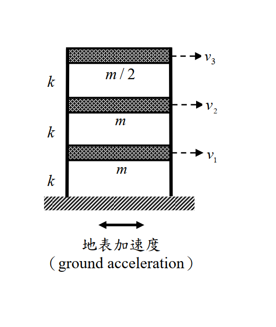
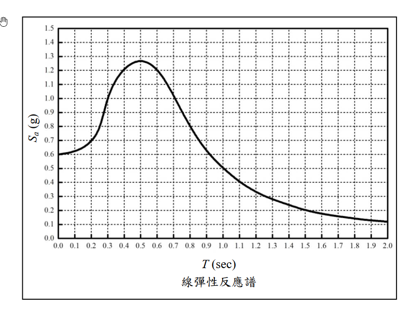

SD-2016-4 ｜ 三樓剪力建築 — 反應譜 SRSS 耐震分析
考年： 2016（民國 105 年）｜題號： 第四題｜配分： 25 分
primaryTopicId： SD-U2-1｜analysisMethod： 模態疊加法 + SRSS 組合
§1 題目重述
如 fig-1 所示，三樓剪力建築（shear frame），各樓層質量與樓層勁度如下：
| 樓層 | 質量 | 層間勁度 |
|---|---|---|
| 1（地面以上一樓） | $m$ | $k$ |
| 2（二樓） | $m$ | $k$ |
| 3（頂樓） | $m/2$ | $k$ |
參數： $$k = 1.15\times10^6\ \text{N/m},\quad m = 5\times10^3\ \text{kg}$$
已知設計反應譜（彈性，圖 fig-2，$S_a$ 單位 g，$T$ 單位 s），試求：
- (一) 自然頻率 ω 與振態 {φ}（6 分）
- (二) 各樓層位移（SRSS 組合，14 分）
- (三) 各層剪力（SRSS 組合，5 分）

圖說：三層剪力屋架（shear frame）。自由度 $v_1$（1F）、$v_2$（2F）、$v_3$（RF）由底層向上遞增；集中質量 1F = 2F = $m$、RF = $m/2$；三個樓層的層間總勁度均為 $k = 1.15\times10^6$ N/m；輸入為底部地表加速度（ground acceleration）。

圖說：線彈性加速度反應譜（$S_a$ 以 $g$ 為單位、$T$ 以秒為單位）。$T=0$ 時 $S_a \approx 0.60g$；$T = 0.2$ s 約 $0.70g$、$0.25$ s 約 $0.79g$、$0.3$ s 約 $1.00g$、$0.4$ s 約 $1.21g$；尖峰在 $T \approx 0.5$ s 約 $1.27g$；其後遞減，$0.6$ s 約 $1.21g$、$0.7$ s 約 $1.01g$、$0.8$ s 約 $0.81g$、$0.9$ s 約 $0.63g$、$1.0$ s 約 $0.50g$、$2.0$ s 約 $0.12g$。格線間距為 $T$ 每 0.1 s、$S_a$ 每 0.1g。
§2 系統矩陣
自由度： $v_1$（1F）、$v_2$（2F）、$v_3$（RF），以 ground acceleration 為輸入。
質量矩陣
$$[M] = \begin{bmatrix} m & 0 & 0 \\ 0 & m & 0 \\ 0 & 0 & m/2 \end{bmatrix} = 10^3 \begin{bmatrix} 5 & 0 & 0 \\ 0 & 5 & 0 \\ 0 & 0 & 2.5 \end{bmatrix}\ \text{kg}$$
勁度矩陣
三層均為勁度 $k$ 的剪力彈簧（剪力樓層假設）：
$$[K] = k\begin{bmatrix} 2 & -1 & 0 \\ -1 & 2 & -1 \\ 0 & -1 & 1 \end{bmatrix}$$
§3 特徵值問題（自然頻率與振態）
§3.1 特性多項式推導
令 $\lambda = \omega^2 m/k$，特徵方程式 $\det([K]-\omega^2[M])=0$ 展開：
$$\det\begin{bmatrix} 2-\lambda & -1 & 0 \\ -1 & 2-\lambda & -1 \\ 0 & -1 & 1-\lambda/2 \end{bmatrix} = 0$$
沿第一列展開：
$$ (2-\lambda)\bigl[(2-\lambda)(1-\tfrac\lambda2)-1\bigr] - (1-\tfrac\lambda2) = 0 $$
整理得：
$$\boxed{\lambda^3 - 6\lambda^2 + 9\lambda - 2 = 0}$$
§3.2 因式分解
嘗試 $\lambda=2$：$8-24+18-2=0$ ✓，因此提出 $(\lambda-2)$：
$$(\lambda-2)(\lambda^2-4\lambda+1) = 0$$
另外兩根由 $\lambda^2-4\lambda+1=0$ 得 $\lambda = 2\pm\sqrt{3}$。
三個特徵值（由小至大）：
| 模態 | $\lambda_i$ | 數值 |
|---|---|---|
| 1 | $2-\sqrt{3}$ | 0.2679 |
| 2 | $2$ | 2.0000 |
| 3 | $2+\sqrt{3}$ | 3.7321 |
驗算： $\lambda_1+\lambda_2+\lambda_3=6$，$\lambda_1\lambda_2\lambda_3=2(4-3)=2$ ✓
§3.3 自然頻率與週期
$$\frac{k}{m} = \frac{1.15\times10^6}{5\times10^3} = 230\ \text{rad}^2/\text{s}^2$$
$$\omega_i^2 = \lambda_i \cdot \frac{k}{m}$$
| 模態 | $\omega_i^2$（rad²/s²） | $\omega_i$（rad/s） | $T_i$（s） |
|---|---|---|---|
| 1 | $(2-\sqrt3)\times230 = 61.62$ | 7.85 | 0.800 |
| 2 | $2\times230 = 460.0$ | 21.45 | 0.293 |
| 3 | $(2+\sqrt3)\times230 = 858.4$ | 29.30 | 0.214 |
§3.4 振態向量
Mode 1 ($\lambda_1=2-\sqrt3$)，代入 Row 1 與 Row 3：
$$\sqrt{3}\,\varphi_1 = \varphi_2,\quad \varphi_3 = 2\varphi_1$$
$$\boxed{\{\phi_1\} = \begin{Bmatrix}1\\\sqrt{3}\\2\end{Bmatrix}}$$
驗算 Row 2：$-1+\sqrt3\cdot\sqrt3-2=-1+3-2=0$ ✓
Mode 2 ($\lambda_2=2$)，Row 1 給 $\varphi_2=0$，Row 2 給 $\varphi_3=-\varphi_1$：
$$\boxed{\{\phi_2\} = \begin{Bmatrix}1\\0\\-1\end{Bmatrix}}$$
驗算 Row 3：$-0+(1-1)(-1)=0$ ✓
Mode 3 ($\lambda_3=2+\sqrt3$)，Row 1 給 $\varphi_2=-\sqrt3\,\varphi_1$，Row 3 給 $\varphi_3=2\varphi_1$：
$$\boxed{\{\phi_3\} = \begin{Bmatrix}1\\-\sqrt{3}\\2\end{Bmatrix}}$$
驗算 Row 2：$-1+(-\sqrt3)(-\sqrt3)-2=-1+3-2=0$ ✓
物理意義：
| 模態 | 形狀特徵 | 有效質量比 |
|---|---|---|
| Mode 1 | 同向、低頻、最大樓頂位移 | 92.9 % |
| Mode 2 | 1F 與 RF 反向，2F 為節點 | 6.7 % |
| Mode 3 | 1F 與 RF 同向、2F 反向 | 0.5 % |
§4 SRSS 反應譜分析（各樓層位移）
📊 互動圖：
SD-2016-4-spectrum-viz.html（三個模態週期在反應譜上的落點）
§4.1 模態參與因子
$$\Gamma_i = \frac{\{\phi_i\}^T[M]\{1\}}{\{\phi_i\}^T[M]\{\phi_i\}}$$
其中 $\{1\}=\{1,1,1\}^T$，$[M]=\text{diag}(m,m,m/2)$。
Mode 1：
$$L_1 = 1\cdot m + \sqrt3\cdot m + 2\cdot\frac{m}{2} = m(2+\sqrt3)$$
$$M_1^* = 1^2\cdot m + 3\cdot m + 4\cdot\frac{m}{2} = 6m$$
$$\Gamma_1 = \frac{m(2+\sqrt3)}{6m} = \frac{2+\sqrt3}{6} = 0.6220$$
Mode 2：
$$L_2 = m + 0 - \frac{m}{2} = \frac{m}{2},\quad M_2^* = m + 0 + \frac{m}{2} = \frac{3m}{2}$$
$$\Gamma_2 = \frac{m/2}{3m/2} = \frac{1}{3} = 0.3333$$
Mode 3：
$$L_3 = m - \sqrt3\,m + m = m(2-\sqrt3)$$
$$M_3^* = 6m\quad(\text{同 }M_1^*)$$
$$\Gamma_3 = \frac{m(2-\sqrt3)}{6m} = \frac{2-\sqrt3}{6} = 0.04467$$
有效質量驗算：
$$\sum \frac{L_i^2}{M_i^*} = \frac{m^2(2+\sqrt3)^2}{6m}+\frac{(m/2)^2}{3m/2}+\frac{m^2(2-\sqrt3)^2}{6m} = \frac{5m}{2} = M_{total}\ \checkmark$$
§4.2 由反應譜讀取 $S_a$
從 fig-2 讀取各模態週期對應之譜加速度。三個週期分別落在譜的三個不同區段，讀圖時要看清楚位置：
| 模態 | $T_i$（s） | 在譜上的位置 | $S_{a,i}$（讀圖） |
|---|---|---|---|
| 1 | 0.800 | 尖峰右側下降段 | 0.80 g |
| 2 | 0.293 | 上升段接近轉折（0.3 s 處 ≈ 1.00 g） | 1.00 g（圖上約 0.97 g，取 1.00 g） |
| 3 | 0.214 | 上升段起點附近（0.2 s 處 ≈ 0.70 g） | 0.72 g |
⚠ 最容易錯的一步： $T_3 = 0.214$ s 位於譜的上升段，$S_a$ 僅約 $0.72g$， 千萬不要因為「$T_3$ 很短、高頻應該很大」而誤讀成尖峰值（1.27g）或誤抄成 $T_1$ 的 $0.80g$。 譜在短週期端是由 0.60g 往上爬的，不是一路很高。
讀圖容差的影響： 本題主控模態為 Mode 1（有效質量 92.9%），Mode 2、3 合計僅 7.1%， 因此 $S_{a,2}$、$S_{a,3}$ 有 ±0.05g 的讀圖誤差時，最終 SRSS 位移與層剪力在三位有效數字內完全不變 （下方 §4.5、§5.3 已驗證）。Mode 1 的 $S_{a,1}$ 才是必須讀準的那一個。
§4.3 模態譜位移
$$S_{d,i} = \frac{S_{a,i}}{\omega_i^2}$$
| 模態 | $S_{a,i}$ (m/s²) | $\omega_i^2$ (rad²/s²) | $S_{d,i}$ (m) |
|---|---|---|---|
| 1 | $0.80\times9.81=7.848$ | 61.62 | 0.12733 |
| 2 | $1.00\times9.81=9.810$ | 460.0 | 0.02133 |
| 3 | $0.72\times9.81=7.063$ | 858.4 | 0.008228 |
§4.4 各模態樓層位移
$$\{U_i\} = \Gamma_i\cdot S_{d,i}\cdot\{\phi_i\}$$
Mode 1 （$\Gamma_1 S_{d,1} = 0.6220\times0.12733 = 0.07920$ m）：
$$\{U_1\} = 0.07920\times\begin{Bmatrix}1\\\sqrt3\\2\end{Bmatrix} = \begin{Bmatrix}0.07920\\0.13718\\0.15840\end{Bmatrix}\ \text{m}$$
Mode 2 （$\Gamma_2 S_{d,2} = 0.3333\times0.02133 = 0.007110$ m）：
$$\{U_2\} = 0.007110\times\begin{Bmatrix}1\\0\\-1\end{Bmatrix} = \begin{Bmatrix}0.007110\\0\\-0.007110\end{Bmatrix}\ \text{m}$$
Mode 3 （$\Gamma_3 S_{d,3} = 0.04467\times0.008228 = 0.0003675$ m）：
$$\{U_3\} = 0.0003675\times\begin{Bmatrix}1\\-\sqrt3\\2\end{Bmatrix} = \begin{Bmatrix}0.0003675\\-0.0006365\\0.0007350\end{Bmatrix}\ \text{m}$$
§4.5 SRSS 組合位移
$$v_j = \sqrt{U_{j,1}^2+U_{j,2}^2+U_{j,3}^2}$$
1F ($v_1$)：
$$v_1 = \sqrt{0.07920^2+0.007110^2+0.0003675^2} = \sqrt{6.2726\times10^{-3}+5.055\times10^{-5}+1.35\times10^{-7}}$$
$$\boxed{v_1 \approx 0.0795\ \text{m} = 7.95\ \text{cm}}$$
2F ($v_2$)：
$$v_2 = \sqrt{0.13718^2+0^2+0.0006365^2} = \sqrt{1.8818\times10^{-2}+4.05\times10^{-7}}$$
$$\boxed{v_2 \approx 0.1372\ \text{m} = 13.72\ \text{cm}}$$
（Mode 3 貢獻於 2F 極小，可忽略）
RF ($v_3$)：
$$v_3 = \sqrt{0.15840^2+0.007110^2+0.0007350^2} = \sqrt{2.5091\times10^{-2}+5.055\times10^{-5}+5.40\times10^{-7}}$$
$$\boxed{v_3 \approx 0.1586\ \text{m} = 15.86\ \text{cm}}$$
位移彙整：
| 樓層 | Mode 1 (m) | Mode 2 (m) | Mode 3 (m) | SRSS (cm) |
|---|---|---|---|---|
| 1F | 0.07920 | 0.00711 | 0.000368 | 7.95 |
| 2F | 0.13718 | 0 | -0.000637 | 13.72 |
| RF | 0.15840 | -0.00711 | 0.000735 | 15.86 |
§5 各層剪力（SRSS）
§5.1 各模態慣性力
$$f_{k,j} = m_k\cdot\Gamma_j\cdot\phi_{k,j}\cdot S_{a,j}$$
Mode 1 ($S_{a,1}=7.848$ m/s²)：
$$f_{1,1}=5000\times0.622\times1\times7.848=24{,}407\ \text{N}$$ $$f_{2,1}=5000\times0.622\times\sqrt3\times7.848=42{,}275\ \text{N}$$ $$f_{3,1}=2500\times0.622\times2\times7.848=24{,}407\ \text{N}$$
Mode 2 ($S_{a,2}=9.810$ m/s²)：
$$f_{1,2}=5000\times\tfrac13\times1\times9.810=16{,}350\ \text{N}$$ $$f_{2,2}=0$$ $$f_{3,2}=2500\times\tfrac13\times(-1)\times9.810=-8{,}175\ \text{N}$$
Mode 3 ($S_{a,3}=7.063$ m/s²)：
$$f_{1,3}=5000\times0.04467\times1\times7.063=1{,}577\ \text{N}$$ $$f_{2,3}=5000\times0.04467\times(-\sqrt3)\times7.063=-2{,}732\ \text{N}$$ $$f_{3,3}=2500\times0.04467\times2\times7.063=1{,}577\ \text{N}$$
§5.2 各模態層剪力
層剪力 = 該層以上各樓層慣性力之總和（各模態分別計算）：
| 模態 | $V_3$ (N) | $V_2$ (N) | $V_1$ (N)（基底剪力） |
|---|---|---|---|
| 1 | 24,407 | 66,682 | 91,089 |
| 2 | −8,175 | −8,175 | 8,175 |
| 3 | 1,577 | −1,155 | 422 |
（$V_2=f_2+f_3$，$V_1=f_1+f_2+f_3$）
§5.3 SRSS 層剪力
$$V_s = \sqrt{V_{s,1}^2+V_{s,2}^2+V_{s,3}^2}$$
頂層 (Story 3，RF 以上)：
$$V_3=\sqrt{24407^2+8175^2+1577^2}=\sqrt{5.957\times10^8+6.683\times10^7+2.487\times10^6}$$
$$\boxed{V_3 \approx 25{,}790\ \text{N} \approx 25.8\ \text{kN}}$$
二樓 (Story 2，2F 以上)：
$$V_2=\sqrt{66682^2+8175^2+1155^2}=\sqrt{4.446\times10^9+6.683\times10^7+1.334\times10^6}$$
$$\boxed{V_2 \approx 67{,}190\ \text{N} \approx 67.2\ \text{kN}}$$
一樓 (Story 1，基底剪力)：
$$V_1=\sqrt{91089^2+8175^2+422^2}=\sqrt{8.297\times10^9+6.683\times10^7+1.78\times10^5}$$
$$\boxed{V_1 \approx 91{,}460\ \text{N} \approx 91.5\ \text{kN}}$$
層剪力彙整：
| 樓層 | Mode 1 (kN) | Mode 2 (kN) | Mode 3 (kN) | SRSS (kN) |
|---|---|---|---|---|
| Story 3 | 24.4 | 8.18 | 1.58 | 25.8 |
| Story 2 | 66.7 | 8.18 | 1.16 | 67.2 |
| Story 1 | 91.1 | 8.18 | 0.42 | 91.5 |
§6 計算重點與常見錯誤
§6.1 解題思路
-
特性多項式： 行列式展開後化為 $\lambda^3-6\lambda^2+9\lambda-2=0$，試驗 $\lambda=2$ 整除後因式分解為 $(\lambda-2)(\lambda^2-4\lambda+1)=0$，三根 $2-\sqrt3$、$2$、$2+\sqrt3$ 均有解析解，計算特別乾淨。
-
振態向量： Mode 1 與 Mode 3 形狀對稱（$\{1,\pm\sqrt3,2\}^T$），且 $M_1^*=M_3^*=6m$；Mode 2 的 2F 節點（$\varphi_2=0$）直接可辨。
-
SRSS 使用條件： 本題各模態週期比 $T_2/T_1=0.293/0.800=0.37<0.9$，各模態充分分離，SRSS 精度足夠。
-
Mode 3 貢獻極小： 有效質量比僅 0.5%，各樓層位移與層剪力之貢獻幾乎可忽略。主控模態為 Mode 1（92.9%）。
§6.2 常見錯誤
| 錯誤 | 原因 | 正確做法 |
|---|---|---|
| 質量矩陣寫成 $\text{diag}(m,m,m)$ | 忽略頂層質量 $m/2$ | 仔細讀題，RF 為 $m/2$ |
| 勁度矩陣對角線均為 $k$ | 誤用三層各獨立 | 剪力建築需考慮上下層共同影響，對角線為 $2k$（除最頂層 $k$） |
| 用 $\Gamma_i=\frac{\{\phi\}^T\{1\}}{\{\phi\}^T\{\phi\}}$ | 未含質量矩陣 $[M]$ | 必須計算 $\{\phi\}^T[M]\{1\}$ 和 $\{\phi\}^T[M]\{\phi\}$ |
| 層剪力直接 SRSS 各樓層位移差 | 相位未知，不可相減 | 應先算各模態層剪力再 SRSS |
| $S_a(T_3=0.214\text{ s})$ 讀成 0.80 g 或尖峰 1.27 g | 誤以為「短週期＝高譜加速度」，或把 $T_1$ 的讀值抄過來 | $T_3$ 落在譜的上升段，$S_a \approx 0.72$ g（見 §4.2） |
| 讀圖精度花在錯的模態上 | 三個模態一視同仁反覆核對 | 先算有效質量比，把精度用在主控模態（本題 Mode 1 佔 92.9%） |
§6.3 本題設計巧思
- 選取 $k/m=230\ \text{rad}^2/\text{s}^2$ 使得 $T_1=0.800$ s（整數），週期點落在反應譜易讀位置。
- 勁度矩陣行列式因式分解極工整，$\lambda=2$ 為中間模態的精確整數根。
- Mode 2 的節點（$\varphi_2=0$）使得二樓在 Mode 2 的位移貢獻為零，清楚展示模態正交性的物理意義。
§7 答案總結
(一) 自然頻率與振態：
$$\omega_1=7.85\ \text{rad/s},\quad \omega_2=21.45\ \text{rad/s},\quad \omega_3=29.30\ \text{rad/s}$$
$$\{\phi_1\}=\begin{Bmatrix}1\\\sqrt3\\2\end{Bmatrix},\quad\{\phi_2\}=\begin{Bmatrix}1\\0\\-1\end{Bmatrix},\quad\{\phi_3\}=\begin{Bmatrix}1\\-\sqrt3\\2\end{Bmatrix}$$
(二) 各樓層位移（SRSS）：
$$v_1\approx7.95\ \text{cm},\quad v_2\approx13.72\ \text{cm},\quad v_3\approx15.86\ \text{cm}$$
(三) 各層剪力（SRSS）：
$$V_{\text{Story3}}\approx25.8\ \text{kN},\quad V_{\text{Story2}}\approx67.2\ \text{kN},\quad V_{\text{Base}}\approx91.5\ \text{kN}$$
§8 概念連結
[[modal_superposition]] · [[response_spectrum_analysis]] · [[SRSS_combination]] · [[shear_frame_stiffness]] · [[modal_participation_factor]] · [[effective_modal_mass]] · [[spectral_displacement]]
| 欄位 | 值 |
|---|---|
| verificationStatus | unverified |
| hasSolution | true |
| hasViz | true（SD-2016-4-spectrum-viz.html） |
驗證狀態備註： 2026-08-22 稽核後修正 §4.2 譜加速度讀值與 Mode 3 全鏈，驗證狀態已重設，待人工重新驗算。